State
Stable lab
IT, OT, and ATTACK segments are operating under the final MVP architecture.
Project Janus now has one defensible IT run, one defensible OT run, preserved raw evidence, normalized records, and two detection specifications. Baseline-versus-attack comparison and rule validation begin in Week 5.
Four points summarize Week 4: what is complete, what changed, what was proven, and what happens next.
IT, OT, and ATTACK segments are operating under the final MVP architecture.
One canonical IT run and one canonical OT run now anchor the project evidence.
GPO automation was removed from scope after it failed to execute reliably.
Week 5 first compares baseline and attack records, then converts verified differences into one Windows and one OT detection.
Week 4 outcome: both vectors now have direct proof and organized evidence. Week 5 will compare baseline and attack records before the LLM proposes candidate rules.
Leadership view: the same compact Purdue reference image is used for both vectors. The overlay now shows only the meaningful movement and local execution points, so the story is cleaner and easier to brief live.
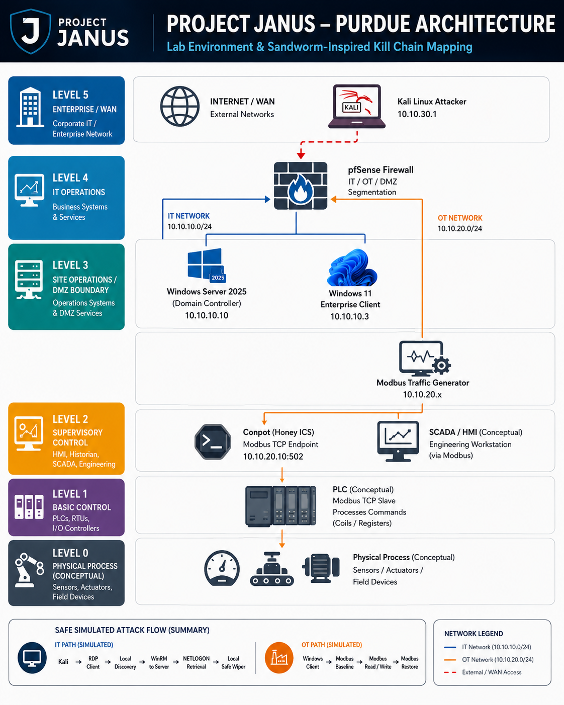
These are the concrete outputs produced or finalized during Week 4, aligned with the project's evidence-completion gate.
| Area | Status | Notes |
|---|---|---|
| Canonical IT run | Complete | Direct proof of discovery, WinRM remoting, NETLOGON retrieval, and marker-protected wiper behavior. |
| Canonical OT run | Complete | Baseline capture, coil write, readback verification, restoration, and preserved structured output. |
| Evidence organization | Complete | Raw baseline and attack artifacts kept separate from normalized working copies. |
| Baseline/attack comparison | Week 5 | Raw and normalized artifacts are prepared; formal comparison has not yet been completed. |
| Windows detection specification | Complete | Focused on verified remote execution and client-side PowerShell process behavior. |
| OT detection specification | Complete | Focused on the confirmed Modbus write behavior and its observable fields. |
| Week 5 target | Planned output | Why it is bounded |
|---|---|---|
| Evidence comparison | Baseline-versus-attack findings | First Week 5 step: identify verified differences and fields before rule generation. |
| Sigma rule | 1 Windows behavioral rule | Portable artifact built only after the comparison confirms usable fields. |
| Janus JSON rule | 1 executable Windows JSON rule | Small, schema-constrained controller artifact instead of a broad custom engine. |
| Suricata rule | 1 OT network rule | Focused on the confirmed Modbus write rather than a large signature library. |
| Validation | Attack and baseline checks | LLM output remains a hypothesis until it passes syntax/schema checks and direct testing. |
| Response preparation | Prebuilt JANUS_BLOCKLIST | Sets up the constrained pfSense block/unblock workflow for Week 6. |
| Retired path | Automated GPO deployment | Documented as a failed attempt; not part of the validated Janus path. |
The website keeps screenshots secondary to the summary, but a small curated set is included so reviewers can quickly see proof of the main Week 4 behaviors.
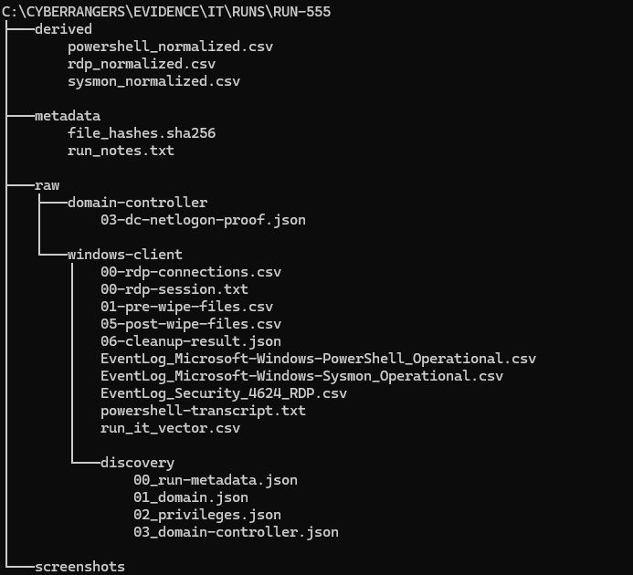
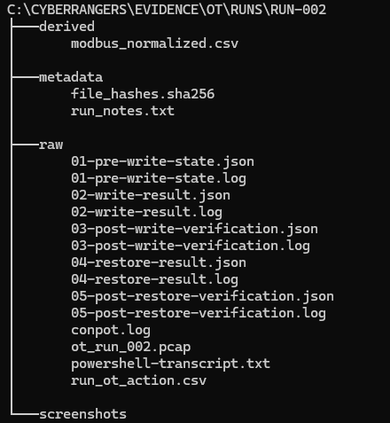
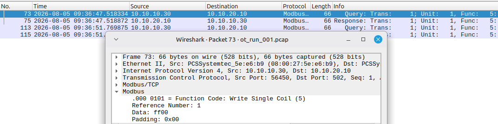
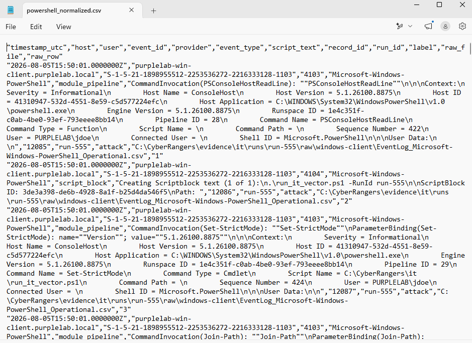
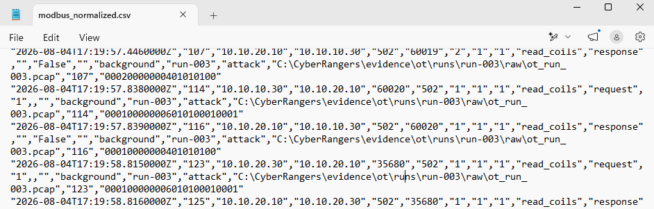
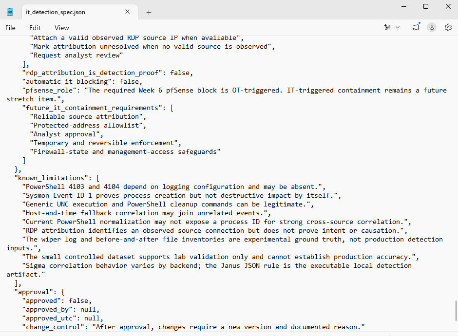
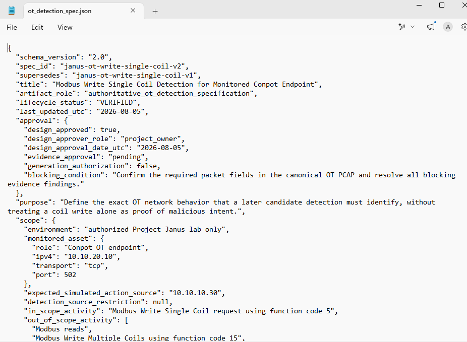
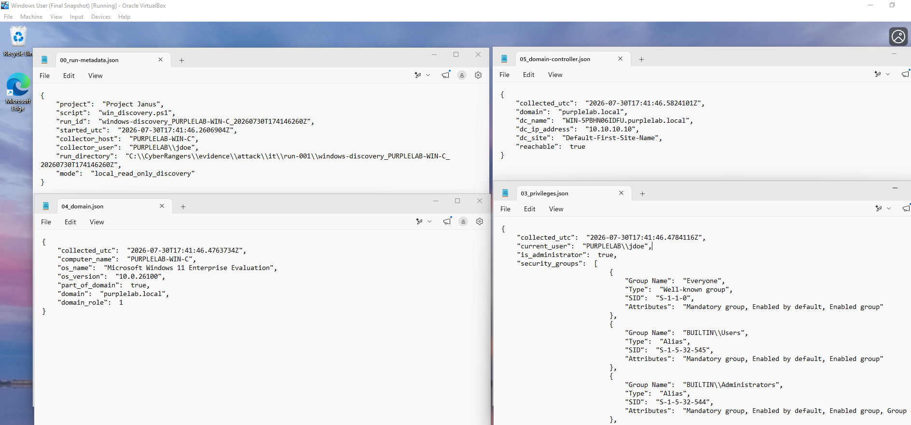
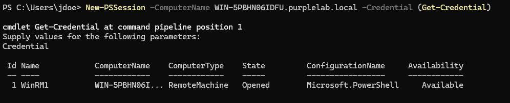
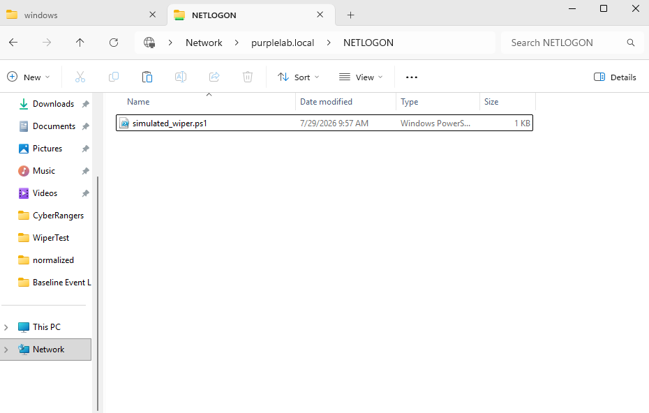
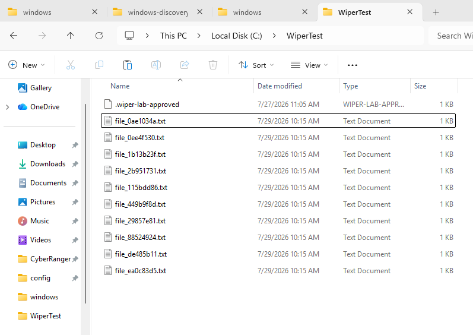
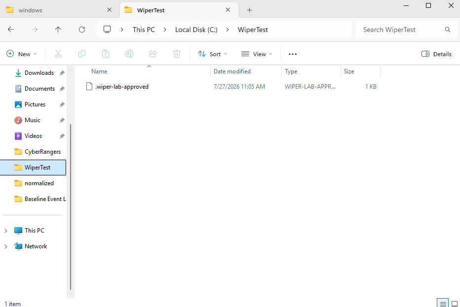
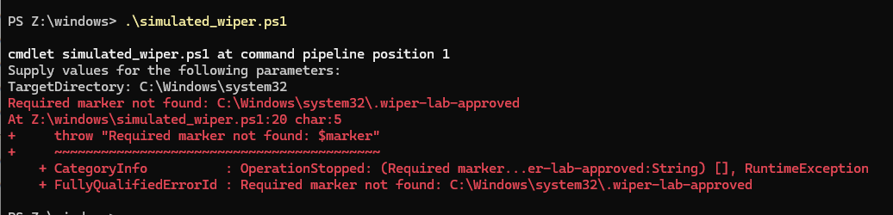
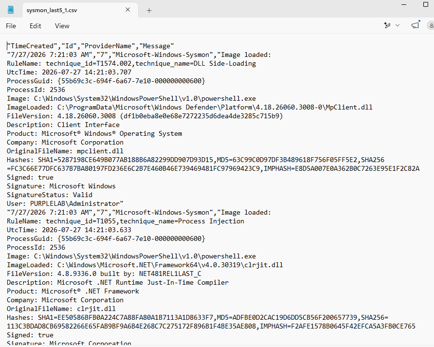
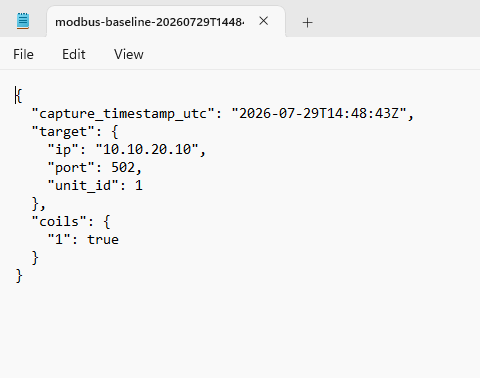
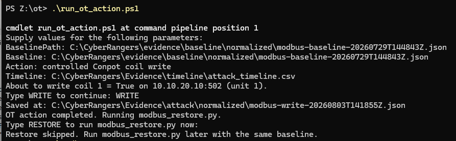
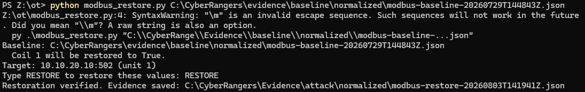
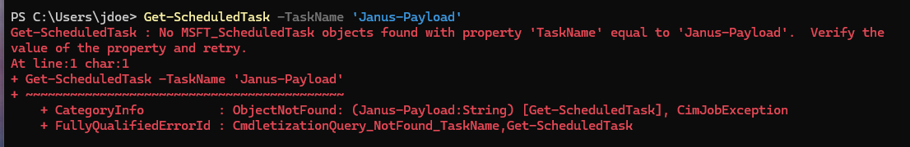
Why this evidence set is intentionally small:
Week 4 is about proving the path and preserving the artifacts, not turning the website into an evidence dump. The repository and run notes can hold the deeper raw material.